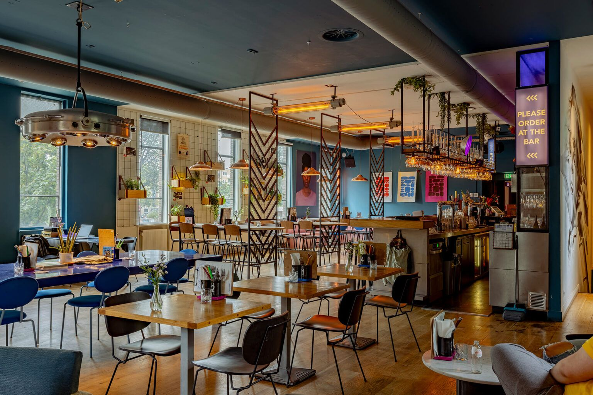
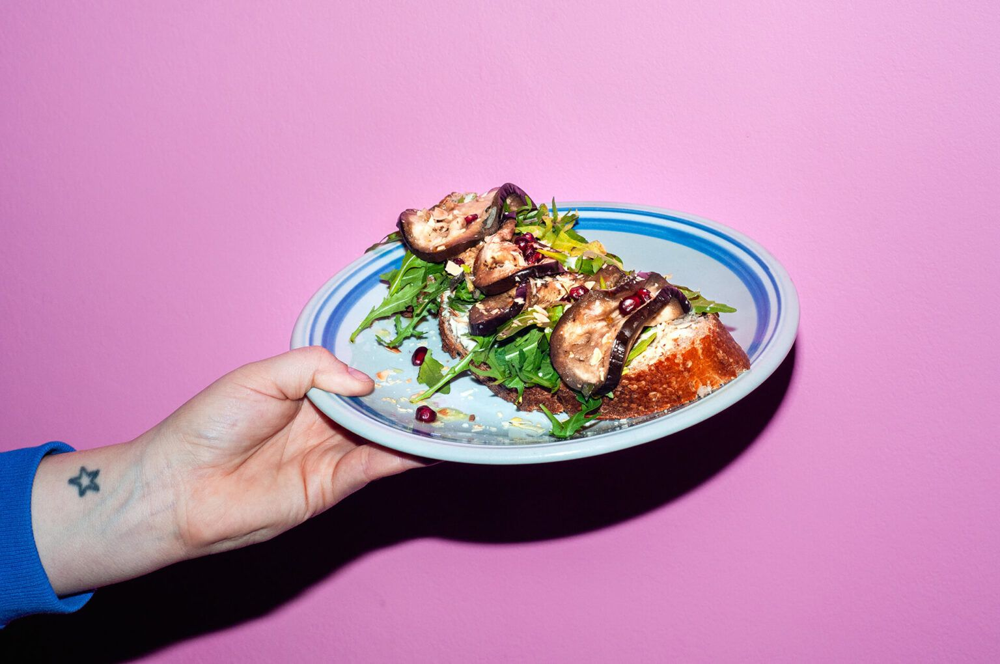

| 10:00 | La Haine | LAB4 | Tickets |
| 10:00 | Gentlemen Prefer Blonder | LAB3 | Tickets |
| 10:15 | Corpse Bride | LAB1 | Tickets |
| 10:15 | Eyes Wide Shut (25td Anniversary) | LAB2 | Tickets |
| 11:55 | Female Trouble | LAB3 | Tickets |
| 12:00 | Beetlejuice Beetlejuice | LAB1 | Tickets |
| 12:05 | tde Terminator (4K Restoration) | LAB4 | Tickets |
| 13:30 | L'Eclisse | LAB2 | Tickets |
| 13:50 | Carmen Jones | LAB3 | Tickets |
| 14:15 | Black Narcissus | LAB1 | Tickets |
| 14:20 | Alien: Romulus | LAB4 | Tickets |
| 16:00 | Plein Soleil | LAB2 | Tickets |
| 16:05 | Mommie Dearest | LAB3 | Tickets |
| 16:30 | Beetlejuice Beetlejuice | LAB1 | Tickets |
| 16:45 | Blink Twice | LAB4 | Tickets |
| 18:30 | Beetlejuice Beetlejuice | LAB2 | Tickets |
| 18:45 | To Die For | LAB1 | Tickets |
| 18:50 | Made In England: tde Films Of Powell And Pressburger | LAB3 | Tickets |
| 19:00 | Schirkoa | LAB4 | Tickets |
| 20:45 | Le Cercle Rouge | LAB2 | Tickets |
| 21:00 | Opening Night | LAB1 | Tickets |
| 21:15 | Big Fish | LAB4 | Tickets |
| 21:30 | Peeping Tom | LAB3 | Tickets |
Events
-
VEELKOPPIG VROUW: VROUWELIJKHEID IN DE LITERATUUR
In haar nieuwe boek Liggend naakt – Een essay over verkleden onderzoekt schrijver Basje Boer onze aannames over vrouwelijkheid aan de hand van mode, make-up en andere symbolen waarvan we vinden dat die horen bij de vrouw. Dit onderzoek naar vrouwelijkheid zet SLAA in samenwerking met Basje Boer voort op het podium met een literair programma op woensdag 18 september in LAB111. Met voordrachten en presentaties van schrijvers die allemaal op hun eigen manier bezig zijn met vrouwelijkheid, vrouw-zijn en de grenzen van gender.
Meer info > -
HUMP! PART 2
We’re making HUMP! history in 2024 with another all-new lineup featuring 25 MORE brand-new adult short films, and there’s something for everyone in the second half of this year’s offerings!
Meer info > -
Schmutz Cinema – Sweet Release
Schmutz Cinema is serving steamy, queer erotic arthouse. Each programme features a variety of bodies, gender identities, and sexual preferences, and it is displayed on a smorgasbord of cinematographic creativity.
Meer info > -
VERS MASTERCLASS MET ROLF DEKENS: DE MAGIE VAN HET BEELD
Graag introduceren we de nieuwe VERS gast voor het komende evenement op maandag 7 oktober! Rolf Dekens is een doorgewinterde Director of Photography. Hij heeft meegewerkt aan grote films zoals “The Hitman’s Bodyguard” en “Tricked” van Paul Verhoeven. Hij werkt al jaren veel in het buitenland en staat op de grootste sets om verhalen voor een breed publiek tot leven te brengen. De visuele stijl en sfeer van het werk van Rolf laat zich niet vangen in één genre of type film, dit maakt hem tot een van de grootste cinematografen in de filmindustrie. De serie “Tokyo Trial” waar hij aan heeft meegewerkt werd zelfs genomineerd voor de prestigieuze Emmy Award. Je zal hem ook kennen van verschillende Nederlandse series en films om maar een paar te noemen: “De Stamhouder”, “De Vuurlinie” en het meest recentelijk de Videoland serie “Sphinx”. Hij studeerde in 2001 af van de Filmacademie en begon zijn carrière met de film “Vet Hard” geregisseerd door Tim Oliehoek. Hij is een ontzettend enthousiaste en gepassioneerde cinematograaf met een ongelofelijke lading aan ervaring.
Meer info > -
Tapis Rouge Frans Filmfestival
Het Tapis Rouge Frans Filmfestival is dé plek om het beste van de hedendaagse Franse en Franstalige cinema te ontdekken. Van klassiek familiedrama tot baanbrekende protestfilm, van gevestigde iconen tot opkomende talenten. Bij Tapis Rouge laten we je kennismaken met de meerstemmigheid van de Franse film.
Meer info > -
Camera Japan Festival 2024
The 19th edition of the Camera Japan Festival is here! Four days of screenings and side programs at LAB111 – October 3rd to October 6th. Like every year the program is full of eccentric and mesmerizing Japanese films and events for everyone to enjoy!
Meer info >
Bar Strangelove
Onze bar is vernoemd naar Stanley Kubricks filmklassieker Dr. Strangelove uit 1964. Vanaf 09:45 uur ben je bij ons welkom! Tussen 12:00 en 15:00 kun je genieten van onze lunchkaart en vanaf 17:30 tot 21:30 serveren we heerlijke zuurdesem pizza’s uit onze Italiaanse steenoven. Je bent welkom voor de film, of kan na de film blijven hangen, je wandelt bij ons binnen en bestelt gemakkelijk bij ons aan de bar. Net zoals deze krankzinnige satire is onze bar een nucleaire explosie van gemoedelijkheid waar filmliefhebbers, filmmakers en levensgenieters samen komen voor in samenwerking met Oedipus gebrouwen Panorama-lager, onze Stranamore-wijnen uit onze eigen biologische Italiaanse wijngaard of eigen gemaakte limoncello: Centoundici. Je hoeft bij ons niet te reserveren dus je kunt gewoon langs komen om te genieten van heerlijke zuurdesem pizza, eigengemaakte drankjes in combinatie met een van onze prachtige films.
Bar Strangelove- 
- 